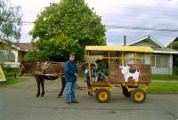
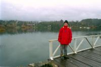
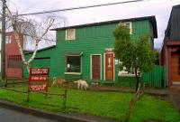

|
Samedi 11 août
Villarica. On passe uune bonne nuit réparatrice dans une hospedaje tenue par
une dame bien sympathique. En fait, les hospedajes sont des chambres chez l´habitant.
C'est vraiment, on a un peu l'impression de voir comment vit la famille de l'intérieur.
La chambre chez l'habitant, ce n'est pas quelque chose de très développé en
Asie, pour nous c'est tout nouveau. Il y a bien quelques pensions très familiales
qui s'en rapprochent, mais elles ne sont pas aussi nombreuses. Berf, on a pris
un super petit déj dans la cuisine de notre hôtesse. Des petits pains plats
passés au grille pain, du beurre, de la confiture, un fromage à pâte dure, le
San Rafael, pas mauvais du tout, et du thé. Pour se réchauffer, il y a dans
la cuisine un poêle à bois comme les vieux en ont encore quelques fois en France,
ceux qui servent aussi à réchauffer et cuire les plats. Pour la cuisine, elle
possède aussi une cuisinière à gaz. Notre est jolie, toute en bois, plancher,
plafond et murs. Il y fait un peu froid, elle est au premier étage et la cheminée
en bas qui, avec un poêle sont les seuls chauffages, ne laisse monter que peu
de chaleur. On va faire un tour en ville pour voir le volcan derrière le lac.
On trouive très facilement -grâce à mon nouveau sens de l'orientation que j'ai-
le lac mais, pas de volcan. Ou alors peut-être derrière ces nuages là-bas, ou
là. Bien caché quoi! Ce n'est pas grave, la ville (ou le gros vilage) est agréable.
Les rues sont larges, goudronnées, un peu à l'américaine. Des maisons basses,
tout en bois, nous donnent un poeu l'impression -en plus du temps- d'être à
la montagne quelque part en France. Sauf qu'elles sont toutes colorées et qu'il
y a quand même ce vendeur de lait à cheval avec une carriole dans laquelle un
gros réservoir en métal lui permet, comme le ferait un pompiste, de servir ses
clients. Mince, il commence à pleuvoir.
Dimanche 12 août
Il a plu toute la nuit, il pleut encore ce matin et la vue est encore moins
dégagée qu'hier. Ca n'entame pas notre moral et on décide d'aller se renseigner
pour l'ascension du volcan derrière le lac... s'il existe vraiment. Et derrière
le lac, il y a Pucon, la ville au pied du volcan invisible. On prend donc le
bus et uine chouette route au bord du lac nous promène au milieu des ruisseaux,
des arbres jaunes (des mimosas on dirait), des conifères et des plages de sable
noir. Parce que ce lac en fait, il se prend pour la mer. A certains endroits,
il sent la mer, il s'amuse à faire des vagues et en plus il s'entoure de plages.
Pucon est plus gros que Villarica, plus touristique aussi. Comme partout au
Chili, il y a des chiens dans les rues. Apparement, bien traités et bien nourris.
On est devenu potes avec une femelles labrador un peu croisée qui nous suit
partout. OIn rentre à l'office du tourisme, elle nous attend. On va acheter
quelque chose, pareil. On a donc fait une grande balade dans la ville avec notre
chien. On l'a même emmenée au lac pour qu'elle se baigne un peu. Avec ce froid!
A midi, on s'est un peu réchauffé avec une côtelette et de la purée. Mais il
fallait faire vite parce que les restos ne sont pas chauffés et que la purée
refroidit très très vite. Et enfgoncés commes on est dans nos polaires, ce n'est
pas facile de manger vite sans se tâcher. Après, on a eu un autre chien, assez
dodu (gordito) lui aussi. Mais il courait après les voitures et les gamins en
vélo. Par contre, dès qu´un plus fort que lui s'approchait, il se planquait...
On lui a quand même donné un bout de notre bon chocolat qui réchauffe.
Suite du voyage : Valdivia
|

Chili
Villarica
|

Chili
Pucon
|

Chili
Pucon
|
|
|